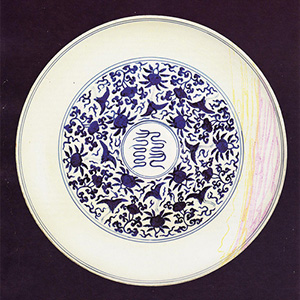
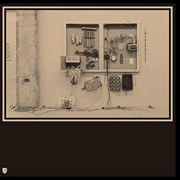
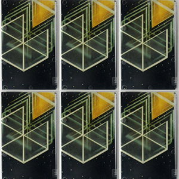
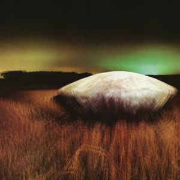
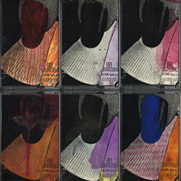

Discography

In To It, 2013, New Images, Vinyl LP

FRKWYS Vol. 10 (collaboration), 2013, RVNG, Intl., Vinyl LP

Etude Study, 2012, Samling, Cassette

Water's Edge, 2011, Holy Mountain / Intercoastal Artists, Vinyl EP

West & Green, 2010, The Curatorial Club, Cassette